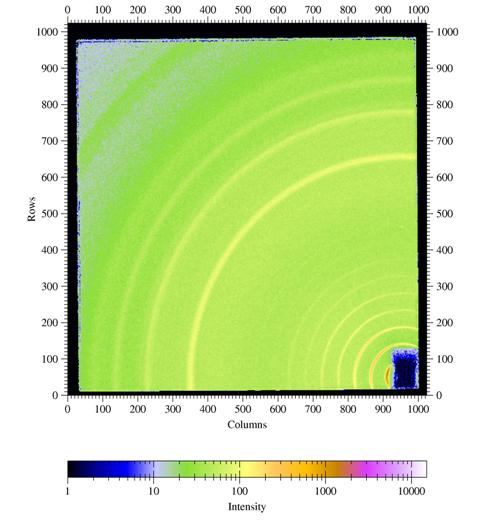
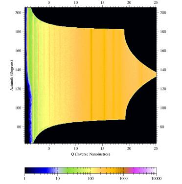
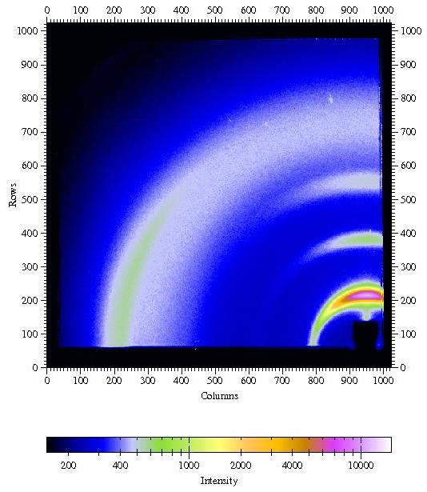
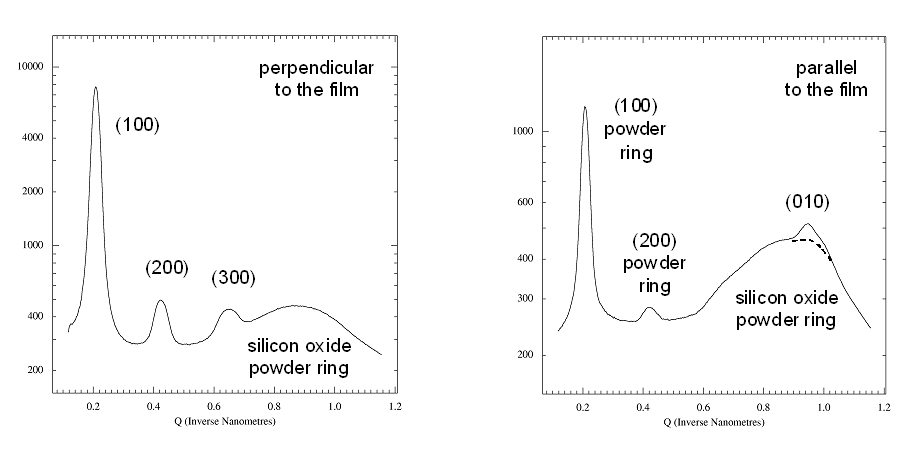
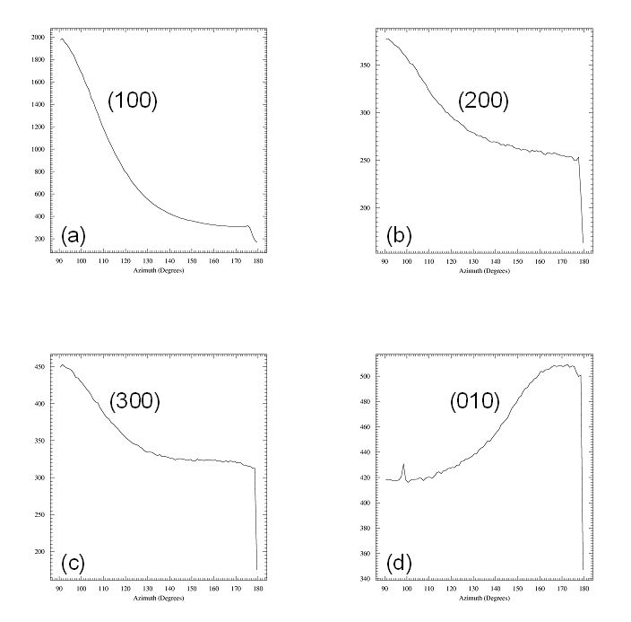

a fit2d SAXS/WAXS
primer
Detlef Smilgies, CHESS D1 station
version 7/2/2009
INDEX
disclaimer
fit2d is a free program
running on LINUX and MS Windows and can be
downloaded from ESRF. Check
out the fit2d homepage
for terms and the latest version. Click here
for the fit2d on-line
manual; an introduction can be found here.
For use of the advanced fit2d
features please include an acknowledgement.
This fit2d primer is
meant for the SAXS/WAXS users at CHESS D1 station. The incomplete subset of fit2d features
explained here, are some things that work for me and come up all the time. fit2d has a 300 page plus manual
that can be viewed on-line or downloaded from ESRF - please take a look
to find out about further details. I'll be glad for feedback on this primer and to
learn new tricks - but don't ask me any detailed fit2d questions: this primer
sums up pretty much what I know and use of fit2d.
No ready-made program will take care of all fine details of the
analysis by itself. For instance proper Lorentz and polarization
factor corrections depend on the experiment. So if you are very picky,
the best way is to do this part yourself. This is particularly true
for
GISAXS and GIWAXS data, for which I still have some questions
about proper data processing.
a final hint
The
way the various items are ordered roughly
corresponds to when you would need to use them. The order also reflects
the degree of sophistication. If you are unfamiliar with fit2d, it may make sense to go
through the list in order. Right-click here
and choose "save target as" to download the datafile I used in the
examples below.
start-up
- Click the fit2D icon on the analysis PC.
- fit2d needs to
reserve some initial memory space for reading in images. For the
MedOptics detector use 1024 by 1024 as number of bins.
- Use memory arrays (answer YES)
for speedy data handling, don't use variance arrays (answer NO).
- Click O.K which
gets
you to
the fit2d main menu.
display an image
- goto SAXS/GISAXS > INPUT
- go
all the way up in the file tree, until you get to the hard drives. The
specuser directory of the data acquisition computer is mapped to drive
H:\ on the analysis PC
- go to your user directory and then onto the corr subdirectory
- INPUT an image
- set the scale: SAXS/GISAXS
> Z-SCALING; choose "LOG SCALE" and set "USER MIN/MAX" to 15 and 15000:
these are the default values to see at a glance, whether the MedOptics detector is
happy - I want you to use this z-scale, while optimizing the CCD exposure
- NOTE:
white regions indicate that the exposure was too long and that the
detector is oversaturated - immediately reduce the exposure time by a factor of
10 !!!
- get back to SAXS/GISAXS
menu by hitting EXIT
- NOTE: this will be the default in many submenus and I won't mention it again
- the
default false color scheme ("geographic") is very powerful - I want you
to use this scheme, while optimizing the CCD exposure
- see manual for other choices (Black & White etc.)
- use SAXS/GISAXS
> ZOOM IN to zoom
into a
region; use ZOOM OUT or FULL to zoom out or get back to the full image, respectively
- use the REMEMBER ROI / FORGET ROI
toggle switch to remember / forget the Region Of Interest (ROI)
defined by your zoom choice for successive images

Figure 1. Raw WAXS data of MedOptics
CCD camera: silver behenate calibration sample (10 keV photons, sample-detector distance about 100mm).
display a series of
images
- go back to main menue > FILE SERIES > COMPOSITE
- input first and last file and FILE INCREMENT (for instance
increment=2
reads in every other file)
- SUBTRACT: NO
- ROI: as needed YES or NO
- NO. PER ROW: aim for
square arrays for best quality; if some images are missing to fill the
array, empty images are given in black
- RE-BIN NO.: the
image size for a composite image gets too large, if
the resolution is not reduced by adding adjacent pixels together ("binning"). Increase the suggested binning number by 1, since fit2d tends to underestimate, how much memory it needs.
notes:
- only files with identical names other than the file number can be
combined into a series (otherwise make renamed copies of the files)
- this feature is very useful to create an overview of all data
background
subtraction
for very weak scatterers or strongly scattering sample environments
such as x-ray capillaries or liquid cells it may be important to take
background images, in order to subtract out the sample cell scatter.
This can be
done in the SAXS/GISAXS or the IMAGE PROCESSING
menu:
- read in background image using INPUT
- click EXCHANGE
- read in data image via INPUT
- click MATH > SCALED SUB: scaled subtraction
allows finetuning a background scaling parameter of the form signal - factor*background which can be adjusted after the inital attempts - I usually use a factor of 1 for starters
- finetune the scalefactor by going up or down in 1% or 10% steps
- a
good value for the factor is found when the far corner of the detector
shows intensity close to zero - you will need to reset the z-scaling
parameter (1 to 15000 is often a good range) - you should still be able
to see the detector noise
- a constant offset of 20 ("pedestal")
was used for the automatic image correction. If the subtraction factor
is below 90% or above 110%, the pedestal should be removed first (can
also be done in the math menu), and then use the scaled subtraction
- you can save the background-subtracted image using OUTPUT to create a file in tiff format for further
processing at a later time
simple operations in pixel space
These simple operations are useful for a quick check of images right while the data are streaming in. - use SAXS/GISAXS
> DISPLAY > SLICE to make a 1D cut through
the image
- use SAXS/GISAXS
> DISPLAY > PROJECTION to project a range of data onto a given axis
- you first define the projection axis with 2 clicks and then the projection range with 2 clicks
- projection take a bit more work than the 1D cut, but yields better statistics
- horizontal and vertical projections are very useful for GISAXS images
graphics output
- use
OUTPUT > TIFF16 to save processed images for further processing
at a later time; such output can be read with fit2d again
- in order to keep track of GISAXS images during beamtime, I recommend using an electronic log:
- use Alt-PrtScr to copy the active window (which in this case would be the fit2D window)
- paste the image into MS Powerpoint or MS Word or some program of your choice using Ctrl-V or the paste function
- you can email these log files to your advisor or collaborator so that they are informed how things are going
- these logs are also extremely useful, in case you want to get
back to me with a question after the run; in particular a program like Powerpoint allows you to mark up features with arrows, add comments etc.
- only if you want to use fit2D for publication-style graphics: use PRINT to save fit2d graphics output to a postscript file
- provide as path for the output file H:\<my user directory>, so that all files remain on the data acquisition computer; use the file extension .ps to facilitate further processing (in fact you may want to make a ps subdirectotory for the output)
- with the free program Ghostview or with Adobe Reader Professional such postscript files can be converted to convenient image formats such as PNG or JPEG for use in publication-quality graphics
- the postscript file can also be sent directly to a color postscript printer
- NOTE: please DO NOT use the black&white printer at the beamline for image output - it uses up the toner in no time
- use OUTPUT > CHIPLOT for xy plots
- an automatic path is generated putting the file back into the corr directory with its original name and extension .chi
- these files can be imported as ASCII into Excel , Origin, etc. for further processing
calibrated plots
direct beam position
- first task is always to find the direct beam mark (through an
attenuator!). I usually make sure that at least one set of calibration
data is collected for each detector configuration. Calibration files
typically contain "AgBeh" or "beam" in their name and I keep track of them in my log.
- zoom into the beam mark to limit the fitting range
- go to SAXS/GISAXS
> BEAM CENTRE > 2D GAUSSIAN FIT and click on
the beam mark
- the program will remember this position, unless a new beam center
calibration is performed; fit results are provided on the fit2d ASCII window
distance & wavelength
calibration
- Usually I measure the x-ray wavelength to better than 1% from the mono
calibration (checked at each beginning of a run or sometime at the end) using the CHESS energy analyzer
- Estimate the sample/detector distance L_est with a ruler (WAXS) or a tape measure (SAXS) to about 10%.
- I use a Ag behenate standard (d-spacing d001=58.38
A, corresponding to a q-value of 1.0763 nm-1) which works for the full
range of sample-to-detector distances available (100mm to 1500mm).
- fit the direct beam mark as described in the previous section
- use SAXS/GISAXS
> INTEGRATE to do an angular integration of the intensity - see next section for a detailed description of the menue features
- follow the instructions in the "integration" section - I should have provided you with the wavelength
- for a first sample-detector distance use the L_est value from above
- do the integration in wavevector space (more robust)
- zoom in onto the first behenate peak and click on the maximum - in the left upper corner of the fit2d graphics window the q_est value is displayed
- do a simple calculation to get the calibrated distance L_cal : L_cal = L_est * q_est / 1.0763 nm-1
- now the detector is self-consistently calibrated using the well-known q-value of the first Ag behenate ring
- sanity check: redo the integration by clicking EXCHANGE and then INTEGRATE, now using L_cal - the first q maximum should be right at the correct value!
notes
- this simple procedure yields a precision better than 1% for SAXS and GISAXS - this is sufficient !!!
- the procedure yields only a precision of 2-3% for GIWAXS, which is often sufficient for diffuse scatterers like polymers
- note: if the sample is off-center by 1 mm, this already corresponds to an error of 1% at 100 mm distance
- if crystallographic
precision (<1%) is needed in GIWAXS, images and beam images should
be taken at 2 distances using a calibrated spacer, so that an absolute
measurement of the scattering angle is performed; L_cal gets determined by fitting several diffraction spots or powder rings taken at different distances
- a
pragmatic way of handling the GIWAXS calibration is using the behenate
calibration for a first orientation during the measurements, and do the
more precise procedure afterwards
- moving the detector is not recommended for the new detector stage
azimuthal
integration
for SAXS/WAXS from non-textured samples you want to simply integrate
the intensity rings and create a simple radial plot:
- choose an appropreation section of the image by zooming in;
specifically the region close to the edge of the detector should be
removed
- use the REMEMBER ROI feature for integration of multiple images
- go to SAXS/GISAXS
> INTEGRATE
- integration needs a fair amount of input data, however, these
will be saved, and can be recalled for the next image to be analyzed
- the important input parameters are:
- pixel size: 46.9 microns for the MedOptics detector in both
directions
- sample to detector distance L_cal (see section above)
- wavelength λ: will be
provided by me
- the direct beam coordinates were already determined in the
previous step
You have a choice of plot axes:
- scattering vector Q (inverse nm)
- scattering angle 2theta (deg)
- d-spacing (Angstroem)
There are some other parameters that are related to the rescaling of
the intensity, which however, depend on the scattering geometry:
- CONSERVE INT. : NO is recommended in
combination with other fit2d features
- POLARIZATION :
does not explain whether it is s- or p-polarization, so if I really
care, I choose NO and do
it myself. This factor does not have effect on SAXS, and also for WAXS
from organics, scattering angles are still smaller than 20 deg with the
MedOptics camera, so this correction is not very important either.
- GEOMETRY COR. takes
care of the transformation from a planar area detector to angle space
(for math freaks: it's the Jacobian), so for this one I use: YES
Some processing parameters:
- MAX. ANGLE: I use
the default suggested by fit2d
- SCAN BINS: a value
of about 500-1000 yields smooth curves
- MAX. D-SPACING:
depends on your sample:
- for WAXS, 100 Å is a good start
- for SAXS, 2000 Å will do for all D1 can resolve
notes:
- You only have to set-up all of these parameters once, and then you
can go through your hundreds of images, provided the scattering
geometry remained the same
- You can save the numeric output data using SAXS/GISAXS > OUTPUT and choose option CHIPLOT for further analysis
of the integrated curves with your own favorite software. The default values in the CHIPLOT menu will result in an
ASCII file with a small header and the plot values written as an x and
a y column of values (don't try to understand the settings). You can
choose/modify the filename using the FILE NAME option.
- You can save any plots using SAXS/GISAXS
> PRINT; the plot is
written to a postscript file.
- Before you INPUT
the next file to process, use EXCHANGE
to get the program into the right mode. This is important in the SAXS/GISAXS menu, some of the
other menus are more forgiving.
- If you forget to use EXCHANGE, you will have to click FULL a couple of times to display an image. Make sure to reset the pixel size in the INTEGRATE menue to the correct value, the next time you use INTEGRATE
- they are still set to the step size of the 1D output plot, and
without correcting this, you will get some very stange output..
Reference:
A P Hammersley, S O Svensson, M Hanfland,
A N Fitch, and D Häusermann, ``Two-Dimensional
Detector Software: From Real Detector to Idealised Image or Two-Theta
Scan'', High Pressure Research, 14, pp235-248, (1996)
cake plots and sector integration
CAKE provides much more sophisticated integration features than INTEGRATE and
I will get into these in quite some detail. In particular if there is
parasitic scattering in the images or if the integration area includes
corner sections, it is most useful to be able to choose "clean" sectors
of the image for highest quality integrations.
- for textured samples, i.e. if powder rings have structure or for
partial powder rings, you
may want to fit the angular width of these features. Here the CAKE menu comes handy: CAKE converts the x,y
image to
a calibrated polar plot, where the x
axis can be 2-Theta (deg), q
(inverse nm), or d (Å),
and the y axis is the azimuth angle around the beam
- so cake yields another 2D image, which however is very suitable
to determine angular widths
- the 2D plot can also be used to yield 1D integrated plots for radial and angular intensity distributions
CAKE uses the same
parameters as INTEGRATE (see
above); additionally you have to indicate
- START AZIMUTH:
choose in first quadrant for a continuous output angular range
- END AZIMUTH: go in
counter-clockwise direction from start azimuth
- INNER RADIUS: can be
as small as the direct beam position
- OUTER RADIUS: can be
as far out as the image extends
- note: the CAKE plot
will always provide a 360 deg range starting from the START AZIMUTH and going in
counter-clockwise direction.
some conversion parameters:
- 1 DEG AZ : YES if 1deg steps yield decent
output, NO - for a
finer grid
- AZIMUTH BINS: 200-500 steps, depending on the angular range, yields smooth curves
- RADIAL BINS: 200-500 looks good
- note: for this transformation you will appreciate how
lightning-fast fit2d cranks
through the data - try the same in Origin!
- note: the usual fit2d features seem to have some problem with the
transformed plot. In particular the pixel size does not come out right.
However, choosing 1 DEG AZ.
: YES, or similar,
provides a simple angular bin size (of 1 deg) for further processing.
Ideally slices or projections (integration of intensity over a range
onto a line) could be used to determine angular width.
Other parameters
- some other parameters as explained in INTEGRATE above
- after the transformation, go to ASPECT RATIO and choose NO for a full size plot
- for printing or writing the CAKE plot to a spreadsheet see below.

Figure
3. Sample output from CAKE:
Shown are the silver behenate rings from the raw image converted to a
azimuth-versus-Q_radial plot. The powder rings are homogeneous showing
the high quality of the conversion. For a textured sample powder ring
features can be fitted to measure angular features.
special
option: integrations with
CAKE
The CAKE integration features
shall be demonstrated with
a more realistic example. Poly(hexyl thiophene) (P3HT) is a common
semiconducting polymer. The side-chains order the polymer backbone in
lamellae parallel to a silicon wafer surface. Polymer backbones are
closely packed due to pi-stacking of the monomer aromatic rings. The
degree of order depends on details of the preparation conditions, and
is subject to current studies.

Figure
4. GIWAXS from a poly(hexyl thiophene) (P3HT) film spin coated onto a
silicon
wafer covered with the native oxide.
Incident angle was chosen as 0.3°. Other parameters are λ=1.24
Å, sample-detector distance L = 101.75mm,
direct beam position on detector: x0=950.2 pixels, z0=54.2 pixels.
I would like to thank Satoyuki Nomura and George Malliaras, Cornell,
for providing an image from a P3HT sample.
Two CAKE special
options are of
immediate interest:
- By setting azimuthal bins to 1, a single 1-D radial 2-Theta or Q-space scan can be obtained which
is integrated over a sector whose angular width is given by the azimuth
parameters. This way the integration region and the signal-to-noise
ratio can be better controlled and problematic regions (edges, bad
spots) can be
better avoided than using INTEGRATE.

Fig
5. Radial scans perpendicular and parallel to the film.
Left panel: Radial scan (90-890
pixels in 800
steps), integrated over azimuth range of 90°-120°. The (H00)
reflections indicative of lamellae formed by the ordering of the alkyl
side-chains show up prodominantly in the
perpendicular direction, i.e. the lamellae are mostly parallel to the
surface. The broad powder ring is due to the amorphous silicon oxide
layer at
the wafer surface.
Right panel: Radial scan (90-890
pixels in 800
steps), integrated over
azimuth range
of 120°-180°. In the in-plane direction the
(010) peak due to the pi-stacking of the
aromatic rings of the polymer back-bone can be found, i.e. polymer
chains are parallel to the surface and parallel to each other. The weak
(010) peak is superimposed to the silicon oxide powder ring (dashed
curve). Weak
(H00) powderrings indicate that some parts of the film contain lamellae
that have arbitrary orientation (3D powder).
- By setting the number of radial bins to 1, and selecting the
''cake'' as an sector with specific radial vales, an integration of
intensity versus azimuth may be obtained. This is very useful for
texture analysis. In the P3HT case, the azimuthal width characterizes,
how parallel the P3HT lamellae are with regard to the substrate.

Fig 6. Azimuthal scans fron 90°
to 180°
in steps of 1° for the four reflections identified above. A narrow
radial range was chosen around each arc of intensity: (a) 90-250 pixels
for the (100) reflection, (b) 250-400 pixels for (200), (c) 450-540 for
(300), and (d) 680-790 pixels for the (010) reflections. Azimuthal
widths of all four reflections are comparable (about 40° FWHM).
Note that (010) is perpendicular
to the (H00) reflections and the its background is higher, as
(010) is located on top of the broad powder ring of the amorphous
silicon oxide layer.
For further analysis the azimuth distributions can be fitted as
shown below For writing the
distributions to an ASCII file
for creating
publishable figures and or further data analysis, use OUTPUT >
CHIPLOT.
Tricks & Traps - Some things I
found the hard way
- before you INPUT
the next image, hit EXCHANGE:
this recalls the previous 2D data image settings (and the detector
pixel size
before the transform !!).
- If you forget to EXCHANGE,
chack INTEGRATION parameters
carefully, and fix whatever looks wrong - in particular pixel sizes,
and radial range.
- use REMEMBER ROI to
save your integration region - this way you will get the same region each
time in a file series: you can skip START AZIMUTH etc. and directly
proceed to INTEGRATE. By
default this feature is enabled on fit2d start-up.
- At times I have gotten stuck in CAKE beyond rescue - in the
worst case close fit2d and
restart from scratch.
(projections)
Projections onto
calibrated axes are an extremely powerful tool, in particular for the
analysis of GISAXS data. Fit2D provides such a tool in the SAXS/GISAXS
menue, however, I have not been able to get it to work reliably. The
manual states:
"PROJECTION : Integrate
rectangular region to 1-D scan. This uses the beam centre and a user
input coordinate to define an integration line. A second user input
coordinate defines the width of the integration region. Pixels within
this region are effectively ``collapsed'' onto the integration line,
and then re-binned to the required 1-D output scan. This type of
integration is specifically for grazing incidence data."
Disclaimer: I have never figured out how to do this correctly.But here
is a kludge that seems to give reasonable results - but not guarantees
given (you should always check with a standard or a known sample):
- horizontal projection
- click on the left limit of the range keeping the cross hair at the same height as the direct beam mark ( white cross).
- click on the right limit of the range keeping the crosshair at the same height as the direct beam mark
- choose top and bottom of the projection range with the cursor
- you will get the calibration menu, as in INTEGRATE or CAKE (2 pages) - check that calibration parameters are correct
- the third page just informs you about the units in x and y - just hit return
- the plot will show, often with some strange range or scaling
- zoom in to the relevant range
- see graphic output how to save the data to an ASCII xy table for use with other programs (Excel, Origin, etc.)
- vertical projections
- click on the top of the range keeping the crosshair above the direct beam mark
- click on the bottom of the range keeping the crosshair in line
with the dircet beam mark - choosing a poit above the mark is fine
- do not exchange the order of inputs, or you may not get the range you wanted
- now continue as described above for the horizontal case
- the range displayed is even crazier as for horizontal - ignore all of the negative q-range when you zoom in
- note that in a GISAXS detector image, the Yoneda peak occurs
at alf_i+alf_c, or in q-space, q_Y = k {(sin(alf_i)+sin(alf_c)}
(calibrated 2D plots)
I have not yet been able to find a feature in fit2d which handles this common task
in an elegant way, i.e. converting from x,
y (pixels) to q_x, q_y (inverse Angstroem).
Here's the brute force way which is only good for SAXS or GISAXS maps,
when the transformation from pixel space to angle space or Q-space are essentially linear:
- determine the (q_x_min, q_y_min) values of the left bottom
corner
point of the image from the beam
center and Ag behenate calibration
- determine the stepsize per pixel q_x_step and q_y_step
- generate a plot using commands from above, then rescale the plot
axes to these values:
- go to the keyboard interface: MAIN > KEYBOARD
- now typ the following command on the ASCII screen which will
prompt you for the four values determined above: AXES SCALES > q_x_min, q_x_step, q_y_min, q_y_step
- switch back to graphical interface: IMAGE; this has to be done
after each step for changes to take effect on the image
- other useful commands to generate publication-grade figures
include
- remove default labels: SET
X-LABEL STYLE > no;
SET Y-LABEL STYLE
> no
- make numbers larger: SET
ENUMERATION STYLE ; in menu choose color BLACK and size 2
- define major ticks: SET
TICK POSITIONS
- define minor ticks: SET
AXES STYLE
- define user region of image: REGION
- high quality output: PUBLICATION
QUALITY
- for more detailed information see reference manual
- if a series of images is to be reformatted, it is worth while
to learn how to write a fit2d macro
- PRINT to postscript
file
- a program like ghostview (available
free on the internet) can reformat the postscript to a graphics file
format like png or jpeg for use in publications
- unfortunately 1D slices from the rescaled plot do not conserve
the calibration and are plotted in relative pixel units
- calibrated projections onto a line can be obtained using PROJECTION. Please check the fit2d manual for details (I
still have to work this out).
See also Peter Busch's fit2d
notes.
For D1-style GIWAXS, the non-linear coordinate transformation form
pixels to scattering angles to q-components has to be done with another
program, for instance an Origin 7.0 spreadsheet. See GIWAXS at D-line .
1D peak fitting of
calibrated data
- before you get started, the Z-SCALING
mode has to be set to LINEAR (in
any menu you happen to be in). In order to make data visible again, if
you come from LOGARITHMIC,
use FULLY AUTOMATIC or WEAK PEAKS. These features work
for the LINEAR scale,
but yield poor scaling in the LOG
scale.
- goto MAIN > MFIT > INITIALIZE
- provide rough starting parameter:
- use POLYNOMINAL for
the background; a polynom of 6th order
works for me
- choose model for peaks (GAUSSIAN,
etc.) and follow instructions
- provide starting values for each peak
- starting curves are shown that should look reasonable
- EXIT
- OPTIMISE should
give you a nice fit
- RESULTS displays
the fit parameters in your chosen calibrated
coordinates which can be saved to a file using SAVE
- ASCII OUTPUT can
be optained using CHIPLOT (to
be tested)
- PRINT the output,
if you want to use the graphics (see
"calibrated 2D plots")

Reference: A P Hammersley and C Riekel, ``MFIT:
Multiple Spectra Fitting Program'', Synchrotron Rad. News, 2,
pp24-26, (1989) .
final remark
This page a work in progress. Nonetheless it has provided the backbone
for
on-line and off-line data analysis for the users of CHESS D1 station in the past years. Please report errors
to me. If you find another useful fit2d
feature to include in this page, please let me know. DS